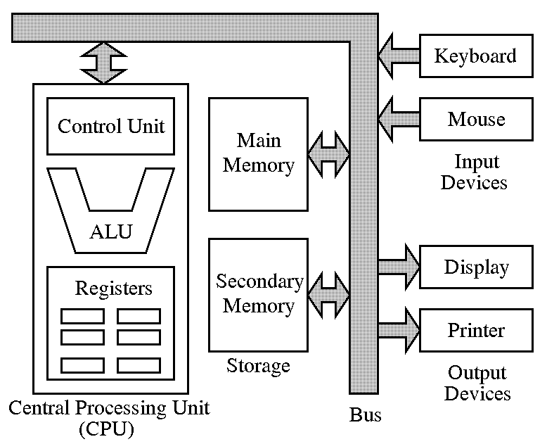

Graph Theory
Prerequisite: Matrix Multiplication
A matrix can be used to represent paths from i to j if \(a_{ij} = 1\).
\[\begin{split}a = \left[\begin{array}{lcr}
0 & 1 & 0 \\
1 & 0 & 0 \\
0 & 0 & 0
\end{array}\right]\end{split}\]
Matrix multiplication is defined as:
for n x m matrix A, m x k matrix B,
\[A \cdot B = C\]
where C is a n x k matrix,
\[\sum_{t=0}^m a_{jt} \cdot b_{tj} = c_{ij}.\]
Example, \(A_{2x4} \cdot M_{4x3} = C_{2x3}\)
\[\begin{split}\begin{bmatrix}
a_{00} & a_{01} & a_{02} & a_{03} \\
a_{10} & a_{11} & a_{12} & a_{13}
\end{bmatrix}
\begin{bmatrix}
m_{00} & m_{01} & m_{02} \\
m_{10} & m_{11} & m_{12} \\
m_{20} & m_{21} & m_{22} \\
m_{30} & m_{31} & m_{32}
\end{bmatrix} =
\begin{bmatrix}
c_{00} & c_{01} & c_{02} \\
c_{10} & c_{11} & c_{12}
\end{bmatrix}\end{split}\]
where \(c_{00} = a_{00} \cdot b_{00} + a_{01} \cdot b_{10} + a_{02}\cdot b_{20} + a_{03} \cdot b_{30}\).
Graph Path
In a n nodes graph, paths of length 2 from node i to node j are:
\[\begin{split}\begin{align}
& n_i \rightarrow n_0 \rightarrow n_j \\
& n_i \rightarrow n_1 \rightarrow n_j \\
& ... \\
& n_i \rightarrow n_{n-1} \rightarrow n_j
\end{align}\end{split}\]
Possible paths from \(n_i\) to \(n_j\) can be:
\[a_{i0} \cdot a_{0j} + a_{i1} \cdot a_{1j} + ... + a_{i(n-1)} \cdot a_{(n-1)j}\]
where \(a_{ij}\) can be either 1 or 0, stands for a path from i to j or not.
A length 2 path matrix can be multiplication of 2 matrix:
\[\begin{split}\begin{bmatrix}
a_{00} & a_{01} & a_{02} & a_{03} \\
a_{10} & a_{11} & a_{12} & a_{13} \\
a_{20} & a_{21} & a_{22} & a_{23} \\
a_{30} & a_{31} & a_{32} & a_{33}
\end{bmatrix}
\begin{bmatrix}
a_{00} & a_{01} & a_{02} & a_{03} \\
a_{10} & a_{11} & a_{12} & a_{13} \\
a_{20} & a_{21} & a_{22} & a_{23} \\
a_{30} & a_{31} & a_{32} & a_{33}
\end{bmatrix} =
\begin{bmatrix}
b_{00} & b_{01} & b_{02} & b_{03} \\
b_{10} & b_{11} & b_{12} & b_{13} \\
b_{20} & b_{21} & b_{22} & b_{23} \\
b_{30} & b_{31} & b_{32} & b_{33}
\end{bmatrix}\end{split}\]
ACSL Sample Problem 2
Paths:
\[\begin{split}\begin{align}
& A \rightarrow A & B \rightarrow B \\
& A \rightarrow C & C \rightarrow A \\
& B \rightarrow C &
\end{align}\end{split}\]
In matrix:
\[\begin{split}M =
\begin{bmatrix}
1 & 0 & 1 \\
0 & 1 & 1 \\
1 & 0 & 0
\end{bmatrix},
M^2 =
\begin{bmatrix}
2 & 0 & 1 \\
1 & 1 & 1 \\
1 & 0 & 1
\end{bmatrix},
M^4 =
\begin{bmatrix}
5 & 0 & 3 \\
4 & 1 & 3 \\
3 & 0 & 2
\end{bmatrix}\end{split}\]
Assembly Language
ACSL Topic: Assembly Language
In the previous section, we already implemented a simple ALU that can do Addition
and Subtraction. A simple CPU (Control Process Unit) can like this:
Source
A simple computer organization:

Source
This structure help us understand how computer program works, it’s all code and
data stored in memory. The code is actually assembly program.
ACSL chose to define its own assembly language rather than use a “real” one in
order to eliminate the many sticky details associated with real languages. Be
familiar with the OPCODE.
Walk through the OP CODE is a must.
{kind=link}
{kind=link}